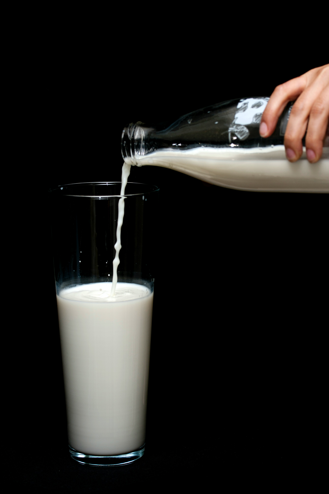
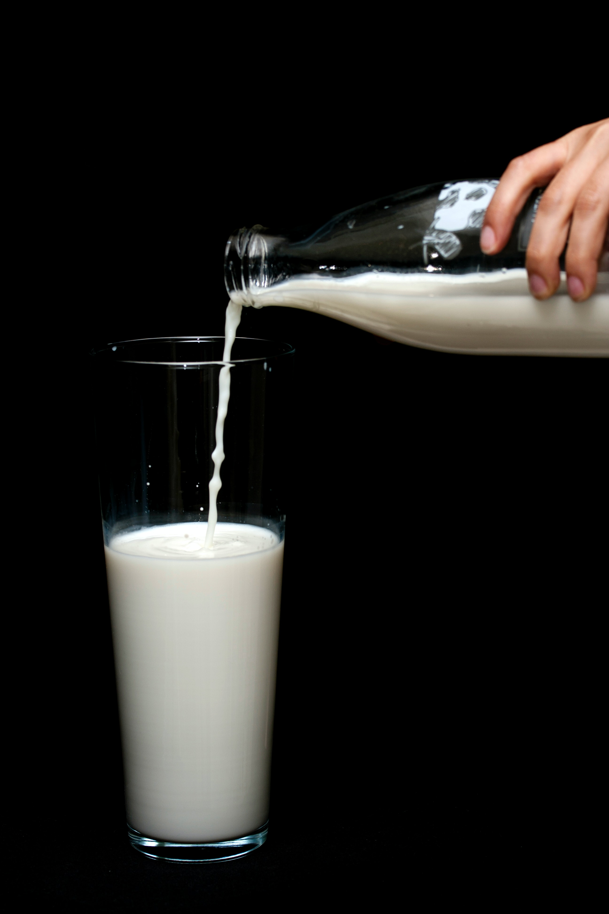
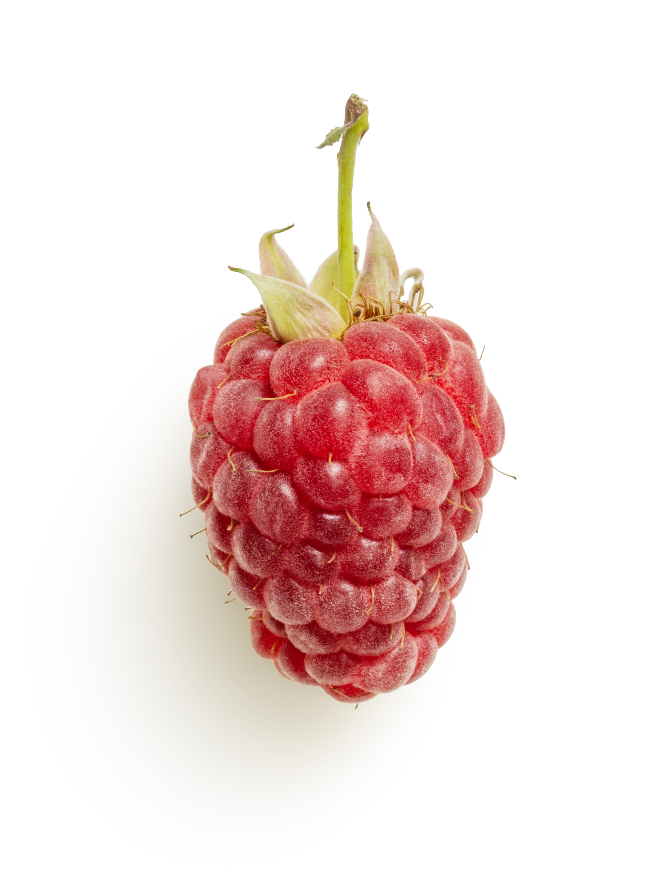
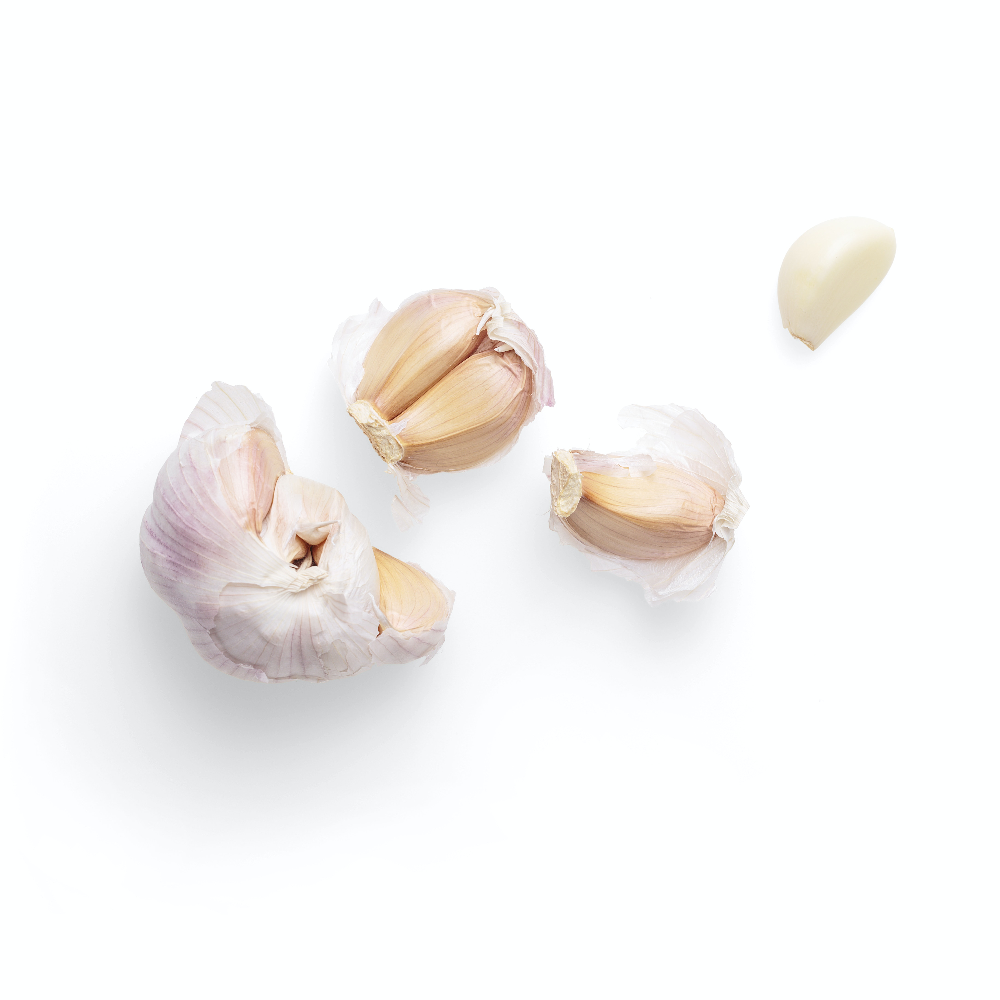
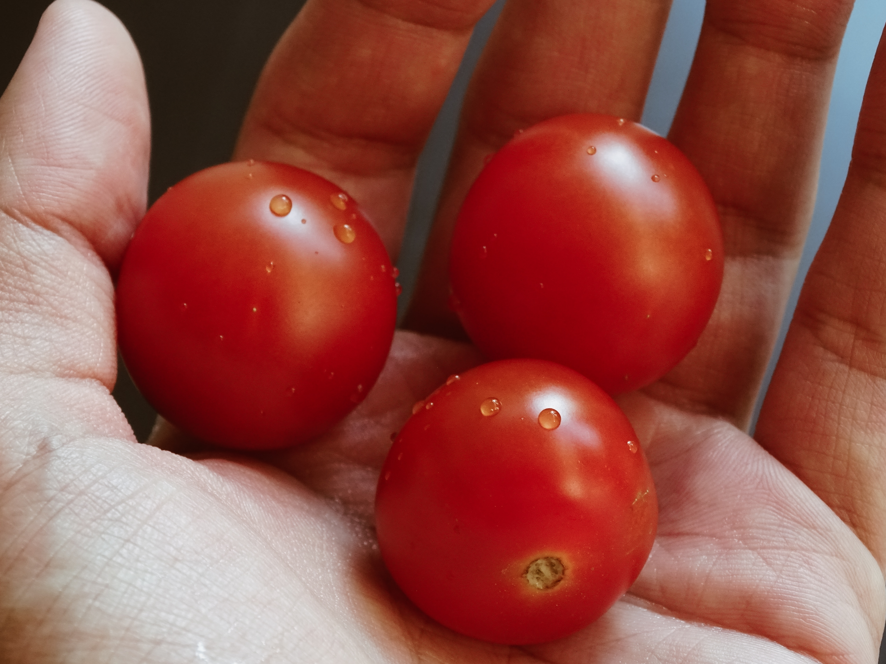

Classes of Food
protein
protein are large, complex molecules that play many critical roles in the body.They do most of the work in cells and are required for the structure, function, and regulation of the body's tissues and organs.Proteins are of great nutritional value and are directly involved in the chemical processes essential for life. Proteins are species-specific; that is, the proteins of one species differ from those of another species. They are also organ-specific; for instance, within a single organism, muscle proteins differ from those of the brain and liver.

 

- fish
- meta
- eggs
- poultry
- milk
vitamin
vitamins are micronutrients required by the body to carry out a range of normal functions. Vitamins are a group of substances that are needed for normal cell function, growth, and development.Most vitamins need to come from food because the body either does not produce them or produces very little. A vitamin is an organic compound, which means that it contains carbon. It is also an essential nutrient that the body may need to get from food.
 - carrot
- leafy vegetables
- sweet potatoes
- kale
- nuts
minerals
minerals are a naturally occurring inorganic solid with a definite chemical composition and a crystalline structure. The earth is composed of mineral elements, either alone or in a myriad of combinations called compounds. A mineral is composed of a single element or compound. By definition, a mineral is a naturally occurring inorganic substance with a definite chemical composition and ordered atomic structure. Minerals which were formed by igneous process that is from the cooling down of the molten materials called magma, have been put in the primary category, while those formed by other processes have been put in the secondary category.


- shellfish
- Shellfish are a top source of 5 out of 8 essential minerals. These include copper, iron, phosphorus, selenium, and zinc. Shellfish are also high in heart-healthy omega 3 fatty acids, and vitamin B12. High mineral shellfish include oysters, scallops, mussels, and clams. They are rich in lean protein, healthy fats, and minerals. Regularly eating shellfish may boost your immunity, aid weight loss, and promote brain and heart health.
- dark chocolate
- Dark Chocolate is a top source of 3 out of 8 essential minerals. These include iron, magnesium, and zinc. For fewer calories and more minerals, choose darker types of chocolate that have less sugar. Eating 80% Cocoa and above is a good rule.Chocolate comes from cacao, a plant with high levels of minerals and antioxidants.
- avocado
- Avocados are a top source of 3 out of 8 essential minerals. These include copper, potassium, and magnesium. Avocados are full of heart-healthy fats and make a tasty addition to any salad or sandwich. This flavorful fruit provides health benefits, such as cholesterol and blood sugar management, because it is a good source of fiber. But when you look at avocado nutrition, you might be surprised. Not only are avocado calories high, but most of the calories come from fat.